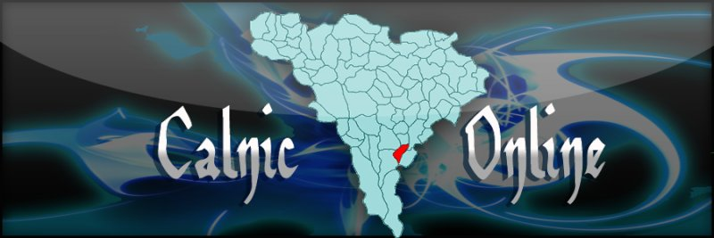

LIMBA
RO
EN

Satul nostru — Amintirile noastre
Acasa
Istorie
Genealogie
Galerie
Contact
Intrebari
Contul Familiei
☰
Acasa
Istorie
Genealogie
Galerie
Contact
Intrebari
Contul Familiei
Arborele satului
Toate familiile, toate legaturile — intr-o singura vedere
✩ ✩ ✩
⇧
⇩
Cauta familie
Familia 1
Alege familia
Familia 2
Alege familia
Vezi relatia
Re-centrare
Familie publica
Familie privata
Traseu relatie
Se incarca datele...
+
-
Detalii familie
Deschide pagina familiei
Vezi in Genealogie